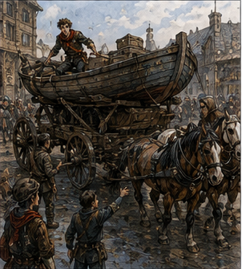
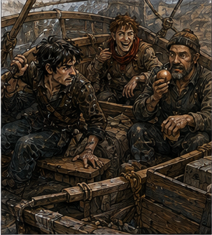

The last place on the Darrowmere list was gone by morning.
Alden blamed me.
“You said maybe.”
“I did.”
“You said it while staring at the line.”
“Yes.”
“Then Berren signed.”
“He was already on the list.”
“He was fifth.”
“There were six spaces.”
“He brought a friend.”
“That is how numbers work.”
Alden looked at the board as though arithmetic had betrayed him personally.
I was disappointed too. That was useful information. Darrowmere did not need us specifically. I had simply wanted to go. Apparently wanting was allowed.
I was still deciding what to do with that when Rusk found me.
Not Dema Rusk.
Rusk.
Antonius’s Rusk.
He stood near the guild doors with his usual expression of having already completed a conversation everyone else had not yet started.
“You’re free.”
It was not a question.
“Currently.”
“Marr?”
Alden looked over.
“What?”
“You’re free too.”
“Depends.”
“On?”
“What you want.”
Rusk considered him.
“Good answer.”
I said, “What does Antonius want?”
“Boat moved.”
Alden looked at me.
I looked at Rusk.
“Boat.”
“Yes.”
“Where?”
“East.”
That changed the shape of the morning.
“How far east?”
“Far enough.”
“Toward Darrowmere?”
“Near enough.”
Alden grinned.
I did not.
Mostly.
“What kind of boat?”
Rusk started walking.
“Cheap.”
“That is not a kind of boat.”
“It is today.”
We followed.
Of course we followed.
The boat was on a wagon. The sentence did not become less stupid when I saw it.

It was perhaps twenty feet long, broad in the middle, shallow underneath, and painted a green that had lost an argument with several years of weather. The mast was gone. Two benches remained. One side bore faded white lettering I could not read because half the name had been scraped away.
The entire thing sat in a timber cradle on top of a six-wheeled freight wagon.
Four draft horses stood in front.
A fifth horse waited beside them.
Two men were tightening straps.
A woman under the wagon was swearing at an axle.
I stopped.
Alden kept walking three steps before realizing I had not.
He turned.
“What?”
I pointed.
“I know.”
“You knew?”
“No. I can see.”
Rusk said, “Get in.”
I looked at him.
“The boat.”
“Yes.”
“On the wagon.”
“Yes.”
“You want us inside it.”
“Yes.”
“While it moves.”
“That is generally why I came for you.”
Alden climbed the wheel before I finished processing the insult.
I hated him.
I climbed after.
The inside of the boat contained six sacks of something, two coils of rope, a wooden chest, three folded canvas sheets, and one annoyed-looking man with a shaved chin and a wool cap.
He was eating an onion.

Raw.
He nodded at us.
“You guild?”
“Yes,” Alden said.
“No,” I said.
Rusk looked up.
I corrected.
“Bronze guild. Not assigned by the guild.”
The onion man took another bite.
“Good.”
“Why is that good?”
“Guild people ask questions.”
I sat on one of the benches.
“I have bad news.”
His name was Pellor.
Not Pell.
Pellor.
I made him repeat it.
“Pellor.”
“Fine.”
“You look disappointed.”
“I know another Pell.”
“Sorry.”
“That is not your fault.”
“I know.”
He ate more onion.
The wagon lurched.
The boat moved.
On land.
I gripped the bench.
Alden laughed.
“This is excellent.”
“This is offensive.”
“To what?”
“Boats.”
Pellor said, “Boat doesn’t care.”
“How do you know?”
“Owned six.”
“What happened to them?”
“Sold four. Sank one.”
“And this one?”
“Not mine.”
“That does not answer the emotional question.”
Pellor stared at me.
Alden laughed harder.
The wagon rolled east.
Rusk rode beside us on the fifth horse.
I leaned over the side.
“Why does Antonius own a boat?”
“He doesn’t.”
“Whose boat is it?”
“His until noon.”
“That is worse.”
Rusk kept riding.
“Explain.”
“No.”
“Rusk.”
“You’ll make it complicated.”
“It is a boat on a road.”
“Exactly.”
I sat back.
Alden said, “Maybe he stole it.”
“Antonius does not steal boats.”
“You sound very sure.”
“He would consider theft an inefficient acquisition structure.”
Pellor stopped chewing.
“What?”
“Nothing.”
We passed East Market.
For one irrational moment I expected Octavia to emerge from the freight office, see the boat, and somehow make it our fault.
She did not.
A cart driver outside the cooperative did stare at us.
Then another.
A child pointed.
A woman laughed openly.
The boat had become an event.
This was not improved by Alden standing in the bow.
“Sit down.”
“I’m looking.”
“You can look seated.”
“It’s a boat.”
“It is twenty feet above its dignity.”
“We’re not twenty feet up.”
“Metaphor.”
Alden spread his arms.
The wagon hit a rut.
He nearly fell.
Pellor caught the back of his belt.
Alden sat.
“Thank you.”
Pellor nodded.
“Third today.”
“Third what?”
“Idiot.”
I liked him.
The eastern road was busy.
Not refugee-crowded yet.
Busy.
Carts heading toward the city carried people, household goods, livestock, sacks, crates, and one enormous wardrobe tied flat across a wagon bed.
Traffic going east was thinner.
Watch riders.
Guild groups.
A healer’s wagon.
Two freight carts.
Us.
Boat.
People made room.
Not because we had priority.
Because nobody wanted to collide with a boat.
There were advantages.
At the first toll post, the clerk came out holding a slate.
He looked at the wagon.
Looked at the boat.
Looked at us.
“What is that?”
Pellor said, “Boat.”
“I can see that.”
“Then why ask?”
The clerk closed his eyes.
“Freight category?”
Pellor pointed at Rusk.
Rusk produced papers.
The clerk read them.
Then read them again.
“This says salvage timber.”
“Yes,” Rusk said.
The clerk looked at the boat.
“It is a boat.”
“Currently.”
“What does that mean?”
Rusk pointed at the papers.
“Read the transfer clause.”
The clerk did.
His face changed.
I leaned over the side.
“What does it say?”
“No,” Rusk said.
“I can read.”
“That is what worries me.”
The toll clerk handed the papers back.
“Two copper.”
Rusk paid.
We moved.
I stared at him.
“Salvage timber.”
“Yes.”
“You bought a boat as wood.”
“No.”
“Antonius bought a boat as wood.”
“No.”
“Someone bought a boat as wood.”
“Closer.”
“Who?”
Rusk sighed.
“Lender in West Ward took it against debt.”
“Antonius?”
“No.”
“Then why are we moving it?”
“Lender owed Antonius.”
There it was. A chain. Debtor surrendered boat to lender. Lender owed Antonius. Antonius accepted the boat, not because he wanted a boat, but because he wanted value.
“How much?”
Rusk looked ahead.
“How much debt?”
“Yes.”
“No.”
“How much is the boat worth?”
“Depends.”
“On?”
“Where it is.”
Excellent.
Now I understood why I was here.
Not the job.
Antonius.
Alden leaned over.
“How much did he get it for?”
Rusk said, “Twenty-six silver credit.”
Pellor whistled.
I looked around the boat.
“What is it worth?”
Pellor answered.
“Floating?”
“Yes.”
“Good hull, maybe two gold. More with mast, sail, fittings.”
I stared.
Alden stared.
Rusk did not.
“Two gold?”
“Maybe.”
“For twenty-six silver?”
Rusk said, “If you can get it to water.”
I looked over the side at the road.
Ah. There was the missing price. Transport. Cradle. Wagon. Horses. Labor. Tolls. Repairs. Destination. Risk. A cheap boat was only cheap because it was in the wrong place.
“How did it get here?”
Pellor said, “Built inland.”
“Why?”
“Buyer ordered three river lighters from a yard north of here.”
“North?”
“Timber yard. Good builders. Bad contract.”
“What happened?”
“Buyer failed before delivery. Two sold. This sat.”
“Why not dismantle it?”
“Worth more whole.”
“If moved.”
“If moved.”
Rusk said, “Antonius had a buyer.”
“Had?”
“Yesterday.”
Darrowmere.
I looked east.
“What changed?”
“Buyer delayed.”
“Because of the road?”
“Because buyer’s freight is being diverted for relief.”
“So Antonius has a boat on a wagon, a buyer who cannot receive it, transport already paid, and a road filling with refugees.”
“Yes.”
“And we’re still moving east.”
“Yes.”
“Why?”
Rusk looked at me.
“Because the boat is useful.”
“For what?”
“Cargo.”
“It is cargo.”
“Today it carries cargo.”
I looked behind me.
Six sacks.
Chest.
Canvas.
“What’s in the sacks?”
“Blankets.”
“The chest?”
“Medical supplies.”
“Canvas?”
“Shelter.”
Alden smiled.
“Oh.”
Rusk nodded.
“The buyer’s yard is three miles short of Darrowmere. They agreed to hold the hull. Guild relief needed freight east. Antonius already had the wagon, horses, crew, and route.”
“So he sold the empty space.”
“Donated.”
I stared at him.
Rusk enjoyed that.
Barely.
“Antonius donated?”
“Transport.”
“Why?”
“Ask him.”
“No.”
“Good.”
There were at least six reasons. Reputation. Guild favor. Watch favor. Future contracts. Protecting borrowers. Protecting trade. Cheap goodwill because the wagon was moving anyway. Maybe all six. Maybe a seventh. I did not need to decide. Irritating.
Alden kicked one of the blanket sacks.
“So why us?”
“Two seats.”
“That’s not a reason.”
“Guild wanted more Bronze east. List filled. I needed people to keep idiots from climbing on the freight.”
Alden looked around.
“We are the idiots on the freight.”
“Yes.”
Fair.
The road rose.
The horses slowed.
Our boat became less amusing.
The boat had not changed. The people coming west had.
More now.
A family walking beside an empty cart.
A man with his arm in a sling.
Three women driving twelve goats.
A pair of Darrowmere watchmen escorting a wagon with a broken wheel lashed upright against its side.
Nobody was running.
That mattered.
People fleeing monsters in stories ran forever.
Real people stopped.
They got tired.
They argued.
They fed children.
They worried about wheels.
They carried pots.
A woman walking west looked up at us.
“Boat?”
Alden said, “Yes.”
“Why?”
He looked at me.
I said, “We don’t know anymore.”
She laughed.
Good.
Then she kept walking.
Around midday, the wagon stopped.
Not by choice.
The left rear wheel had sunk into the soft shoulder.
Pellor jumped down.
The woman who had been swearing at the axle earlier reappeared from beneath the wagon as though she lived there.
Her name, I learned, was Vessa.
She looked at the wheel.
“Unload.”
Rusk said, “How much?”
“Enough.”
Alden started lifting blanket sacks.
I did too.
Vessa pointed at me.
“Not there.”
“What?”
“Other side.”
“Why?”
“Weight.”
“I know how weight works.”
“Then demonstrate.”
I moved.
We shifted four sacks, the chest, and both rope coils to the opposite side.
The wheel rose perhaps half an inch.
Vessa dug.
Pellor placed boards.
The horses pulled.
Nothing.
Again.
The boat creaked.
I felt it through the soles of my boots.
Wood under load.
Cradle under load.
Straps pulling.
Wheel resisting.
Horse force traveling through harness, wagon, frame, hull.
My mind started building it.
Not a Barrier.
A diagram.
Where the load actually went.
What part needed to move.
What part did not.
I climbed down.
Vessa said, “Stay out.”
“I have an idea.”
“So does everyone.”
“Where do you need movement?”
“The wheel.”
“How much?”
She looked at me.
“Enough.”
I deserved that.
I crouched.
Mud.
Wheel.
Board.
The problem was not lifting the boat. Obviously. It was reducing one ugly moment of resistance while the horses already supplied almost everything. A tiny intervention.
My channels felt quiet.
Not fresh.
Quiet.
I could make a coin-sized Barrier.
Brief.
Maybe.
Against a wheel carrying this much?
Absolutely not.
Under the wheel would be idiotic.
Against the wagon would be worse.
But the board Pellor had placed was shifting sideways when the wheel pressed it.
That was smaller.
I pointed.
“That board moves.”
Vessa looked.
“So?”
“If it doesn’t?”
“Wheel gets purchase.”
“How long?”
“What?”
“How long does it need not to move?”
She stared.
Then understood enough to become suspicious.
“One pull.”
Good. Information. I knew something. I thought I knew something. I needed to check.
“Horses pull slowly?”
Rusk said, “Greg.”
“I’m not lifting the wagon.”
“That sentence has never improved anything.”
Vessa looked at him.
“Magic?”
“Bad magic,” I said.
“Useful?”
“Possibly.”
“Dangerous?”
“Possibly.”
Rusk dismounted.
“No.”
I looked at him.
“I can brace the board.”
“No.”
“For one pull.”
“No.”
“Coin-sized.”
“No.”
“I did something harder with the hook.”
“That is not reassuring.”
Alden stood beside the boat.
He did not argue for me.
Good.
Annoying.
Vessa crouched beside the board.
“Can you stop this edge sliding?”
“Yes.”
“How sure?”
There was the question. Old Greg would have said yes. Current Greg had failed to move beans.
“Seven in ten.”
“No.”
I liked her less.
She pointed at Pellor.
“Get the second board.”
They solved it without me.
Two boards.
Different angle.
A rock.
One horse repositioned.
Three minutes.
The wheel came free.
I stood in the mud holding absolutely nothing.
Alden walked past.
“You look sad.”
“I had a solution.”
“They had boards.”
“Yes.”
“Boards are good.”
“I know.”
We reloaded.
I climbed back into the boat.
The wagon started again.
For several minutes I watched the road.
Then Vessa climbed onto the rear of the wagon and looked up at me.
“Seven in ten?”
“Yes.”
“Don’t use magic under my wagon at seven in ten.”
“That is reasonable.”
“At nine?”
“I’d still ask.”
“Good.”
She climbed down.
I liked her again.
The buyer’s yard appeared after another hour.
A timber enclosure beside the road.
No water.
Of course.
The boat was being delivered to a place with no water.
I laughed.
Alden said, “What?”
“Nothing.”
Workers opened the gate.
The wagon rolled inside.
A man came out carrying Antonius’s papers.
He inspected the hull.
Checked the straps.
Checked the cradle.
Then looked at the relief cargo.
“That stays?”
Rusk said, “No.”
“Thought so.”
We unloaded blankets, medical chest, canvas, rope.
Another wagon waited.
Smaller.
Faster.
Guild mark on the side.
Darrowmere.
The boat had carried us as far as it could.
Three miles remained.
I climbed down.
My legs felt wrong.
Not injured.
Land wrong.
I had spent half a day sitting in a boat on a road and somehow my body had decided this was a category of travel.
Alden jumped down beside me.
“Worth it.”
“What?”
“Missing the list.”
I looked east.
Smoke marked the horizon.
Not much.
A dark smear above low hills.
Real.
For the first time, Darrowmere existed as more than reports.
A rider came through the yard from the east.
Fast.
He pulled up near the guild wagon.
“Relief?”
Rusk pointed at the supplies.
The rider nodded.
“Good. North road’s closed now.”
My attention snapped to him.
“Why?”
Rusk looked at me.
The rider answered anyway.
“Creatures crossed it.”
“How many?”
“Three seen.”
“Seen by you?”
He looked at me.
“Yes.”
Good.
“What are they?”
“No idea.”
“What did they look like?”
He hesitated.
“Dogs.”
Of course.
Then he added, “If dogs had learned to climb.”
That was new.
Alden stopped smiling.
The rider looked at our Bronze pins.
“You coming?”
I looked at Rusk.
He shrugged.
“Boat’s delivered.”
That was apparently the end of my employment.
I looked at the smaller guild wagon.
Then at the smoke.
Then back at the boat.
Twenty-six silver because it was in the wrong place. Two gold if someone solved the distance between what it was and where it needed to be. I had spent half a day sitting inside somebody else’s problem while Antonius turned the empty space around it into value. There were probably several lessons in that. I refused all of them.
Alden climbed onto the guild wagon.
This time he moved first.
He looked back.
“Greg?”
Three miles.
Unknown creatures.
North road closed.
Darrowmere still standing.
Current body.
Bad magic.
Good questions.
I climbed aboard.
Behind us, on dry land, the boat stayed exactly where it belonged.
For now.